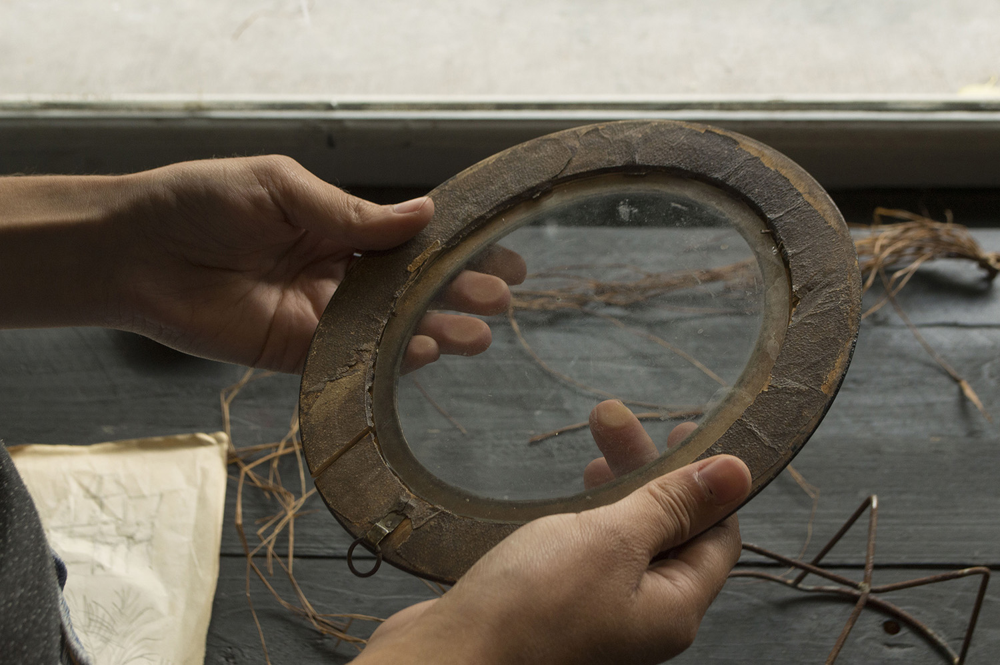

ANNA ILL
Residence of Reflection #4

André Breton parle sur le concepte de le “hasard objectif” comme la relation entre le besoin naturelle ou extérieur, et le besoin intérieur ou humain où les coïncidences si surprenantes semblent révéler quelque chose.
Dans mon oeuvre je travaille dès le moment de la trouvaille avec les objets qui ont non seulement une valeur esthétique, mais une valeur théorique sous l’apparence du destin et du désir. Cette rencontre, entre personne et objet devient une forme de manifestation du besoin intérieur qui s’ouvre chemin dans l’inconscient humain. Les objets abandonnées ou perdus, sont trouvés ou achetés, et plus tard travaillés dans l’atelier.
En particulier, pour la réalisation de cette résidence je voudrais travailler sur les objets abandonnés (à nouveau) qui restent sur le pavé juste après la fermeture du marché. Ces objets oubliés/abandonnés sont à nouveau disponibles et ouverts à des nouvelles rencontres. Ils forment des petits tas, souvent accompagnés d’éléments typiques du marché(sacs en plastique ou des papiers) créant un étalage qui laisse une trace identitaire après la fermeture du marché.
Tout d’abord, je voudrais connaître plus personnellement le marché des puces de Bruxelles, puis aussi acheter des matériaux ou objets pour le projet. En même temps, je réaliserais une recherche photographique (35mm) sur la Place du Jeu de Balle au moment où les marchands commencent à ramasser, puis aux objets oubliés/abandonnées que je vais travailler. Aussi, je ferais une copie sur papier du contour de l’étalage des objets qui sont en contacte direct avec le pavé. Ces copies seront plus tard travailler dans le studio pour devenir un ensemble de formes plus abstraites sur toile.
La rencontre avec un objet qui a été abandonné plusieures fois dans sa chronologie devient une coïncidence puissante que je voudrais explorer sous forme de création artistique avec la réalisation de pièces qui s’inspirent et cherche à représenter l’identité du marché à travers son contenu: les objets.
-
Image: Anna Ill / https://annailldotcom.wordpress.com/